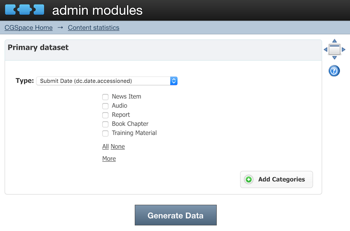
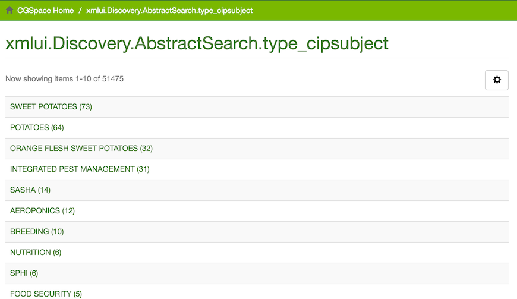

March, 2016
2016-03-02
- Looking at issues with author authorities on CGSpace
- For some reason we still have the
index-lucene-updatecron job active on CGSpace, but I’m pretty sure we don’t need it as of the latest few versions of Atmire’s Listings and Reports module - Reinstall my local (Mac OS X) DSpace stack with Tomcat 7, PostgreSQL 9.3, and Java JDK 1.7 to match environment on CGSpace server
2016-03-07
- Troubleshooting the issues with the slew of commits for Atmire modules in #182
- Their changes on
5_x-devbranch work, but it is messy as hell with merge commits and old branch base - When I rebase their branch on the latest
5_x-prodI get blank white pages - I identified one commit that causes the issue and let them know
- Restart DSpace Test, as it seems to have crashed after Sisay tried to import some CSV or zip or something:
Exception in thread "Lucene Merge Thread #19" org.apache.lucene.index.MergePolicy$MergeException: java.io.IOException: No space left on device
2016-03-08
- Add a few new filters to Atmire’s Listings and Reports module (#180)
- We had also wanted to add a few to the Content and Usage module but I have to ask the editors which ones they were
2016-03-10
- Disable the lucene cron job on CGSpace as it shouldn’t be needed anymore
- Discuss ORCiD and duplicate authors on Yammer
- Request new documentation for Atmire CUA and L&R modules, as ours are from 2013
- Walk Sisay through some data cleaning workflows in OpenRefine
- Start cleaning up the configuration for Atmire’s CUA module (#184)
- It is very messed up because some labels are incorrect, fields are missing, etc

- Update documentation for Atmire modules
2016-03-11
- As I was looking at the CUA config I realized our Discovery config is all messed up and confusing
- I’ve opened an issue to track some of that work (#186)
- I did some major cleanup work on Discovery and XMLUI stuff related to the
dc.typeindexes (#187) - We had been confusing
dc.type(a Dublin Core value) withdc.type.output(a value we invented) for a few years and it had permeated all aspects of our data, indexes, item displays, etc. - There is still some more work to be done to remove references to old
outputtypeandoutput
2016-03-14
- Fix some items that had invalid dates (I noticed them in the log during a re-indexing)
- Reset
search.index.*to the default, as it is only used by Lucene (deprecated by Discovery in DSpace 5.x): #188 - Make titles in Discovery and Browse by more consistent (singular, sentence case, etc) (#186)
- Also four or so center-specific subject strings were missing for Discovery

2016-03-15
- Create simple theme for new AVCD community just for a unique Google Tracking ID (#191)
2016-03-16
- Still having problems deploying Atmire’s CUA updates and fixes from January!
- More discussion on the GitHub issue here: https://github.com/ilri/DSpace/pull/182
- Clean up Atmire CUA config (#193)
- Help Sisay with some PostgreSQL queries to clean up the incorrect
dc.contributor.corporateauthorfield - I noticed that we have some weird values in
dc.language:
# select * from metadatavalue where metadata_field_id=37;
metadata_value_id | resource_id | metadata_field_id | text_value | text_lang | place | authority | confidence | resource_type_id
-------------------+-------------+-------------------+------------+-----------+-------+-----------+------------+------------------
1942571 | 35342 | 37 | hi | | 1 | | -1 | 2
1942468 | 35345 | 37 | hi | | 1 | | -1 | 2
1942479 | 35337 | 37 | hi | | 1 | | -1 | 2
1942505 | 35336 | 37 | hi | | 1 | | -1 | 2
1942519 | 35338 | 37 | hi | | 1 | | -1 | 2
1942535 | 35340 | 37 | hi | | 1 | | -1 | 2
1942555 | 35341 | 37 | hi | | 1 | | -1 | 2
1942588 | 35343 | 37 | hi | | 1 | | -1 | 2
1942610 | 35346 | 37 | hi | | 1 | | -1 | 2
1942624 | 35347 | 37 | hi | | 1 | | -1 | 2
1942639 | 35339 | 37 | hi | | 1 | | -1 | 2
- It seems this
dc.languagefield isn’t really used, but we should delete these values - Also,
dc.language.isohas some weird values, like “En” and “English”
2016-03-17
- It turns out
hiis the ISO 639 language code for Hindi, but these should be indc.language.isoinstead ofdc.language - I fixed the eleven items with
hias well as some using the incorrectvnfor Vietnamese - Start discussing CG core with Abenet and Sisay
- Re-sync CGSpace database to DSpace Test for Atmire to do some tests about the problematic CUA patches
- The patches work fine with a clean database, so the error was caused by some mismatch in CUA versions and the database during my testing
2016-03-18
- Merge Atmire fixes into
5_x-prod - Discuss thumbnails with Francesca from Bioversity
- Some of their items end up with thumbnails that have a big white border around them:
- Turns out we can add
-trimto the GraphicsMagick options to trim the whitespace
- Command used:
$ gm convert -trim -quality 82 -thumbnail x300 -flatten Descriptor\ for\ Butia_EN-2015_2021.pdf\[0\] cover.jpg
- Also, it looks like adding
-sharpen 0x1.0really improves the quality of the image for only a few KB